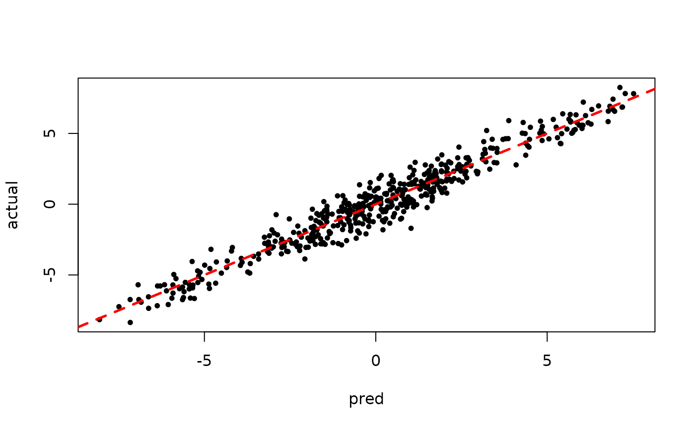
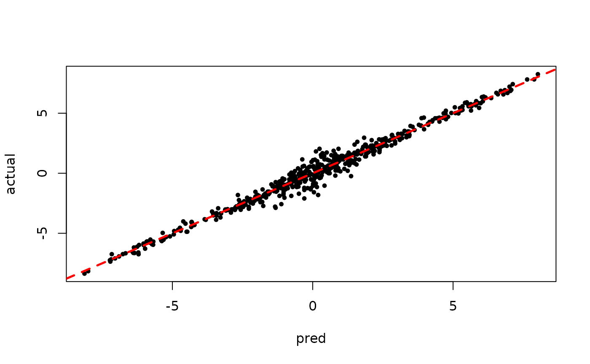

Bayesian Supervised Learning in StochTree
Supervised-Learning.RmdThis interface is not necessarily designed for performance or simplicity — rather the intent is to provide a “prototype” interface to the C++ code that doesn’t require modifying any C++.
To give one (simplified) example, rather than running
sample_sigma2_one_iteration, a researcher might prototype
an alternative global variance sampler in R and pass the updated global
variance parameter back to the forest sampler for another Gibbs
iteration.
To begin, load the stochtree package and set a seed for replicability.
Now, we simulate some straightforward data (in this case, a partitioned linear model).
# Generate the data
n <- 500
p_X <- 10
p_W <- 1
X <- matrix(runif(n*p_X), ncol = p_X)
W <- matrix(runif(n*p_W), ncol = p_W)
f_XW <- (
((0 <= X[,1]) & (0.25 > X[,1])) * (-7.5*W[,1]) +
((0.25 <= X[,1]) & (0.5 > X[,1])) * (-2.5*W[,1]) +
((0.5 <= X[,1]) & (0.75 > X[,1])) * (2.5*W[,1]) +
((0.75 <= X[,1]) & (1 > X[,1])) * (7.5*W[,1])
)
y <- f_XW + rnorm(n, 0, 1)
# Standardize outcome
y_bar <- mean(y)
y_std <- sd(y)
resid <- (y-y_bar)/y_stdSet some parameters that inform the forest and variance parameter samplers
alpha <- 0.9
beta <- 1.25
min_samples_leaf <- 1
num_trees <- 100
cutpoint_grid_size = 100
global_variance_init = 1.
tau_init = 0.5
leaf_prior_scale = matrix(c(tau_init), ncol = 1)
nu <- 4
lambda <- 0.5
a_leaf <- 2.
b_leaf <- 0.5
leaf_regression <- T
feature_types <- as.integer(rep(0, p_X)) # 0 = numeric
var_weights <- rep(1/p_X, p_X)
# var_1_prob <- 0.9
# var_weights <- c(var_1_prob, rep((1-var_1_prob)/(p_X - 1), p_X - 1))Initialize R-level access to the C++ classes needed to sample our model
# Data
if (leaf_regression) {
forest_dataset <- createForestDataset(X, W)
outcome_model_type <- 1
} else {
forest_dataset <- createForestDataset(X)
outcome_model_type <- 0
}
outcome <- createOutcome(resid)
# Random number generator (std::mt19937)
rng <- createRNG(random_seed)
# Sampling data structures
forest_model <- createForestModel(forest_dataset, feature_types, num_trees, n, alpha, beta, min_samples_leaf)
# Container of forest samples
if (leaf_regression) {
forest_samples <- createForestContainer(num_trees, 1, F)
} else {
forest_samples <- createForestContainer(num_trees, 1, T)
}Prepare to run the sampler
num_warmstart <- 10
num_mcmc <- 100
num_samples <- num_warmstart + num_mcmc
global_var_samples <- c(global_variance_init, rep(0, num_samples))
leaf_scale_samples <- c(tau_init, rep(0, num_samples))Run the grow-from-root sampler to “warm-start” BART
for (i in 1:num_warmstart) {
forest_model$sample_one_iteration(forest_dataset, outcome, forest_samples, rng, feature_types,
outcome_model_type, leaf_prior_scale, var_weights,
global_var_samples[i], cutpoint_grid_size, gfr = T)
global_var_samples[i+1] <- sample_sigma2_one_iteration(outcome, rng, nu, lambda)
leaf_scale_samples[i+1] <- sample_tau_one_iteration(forest_samples, rng, a_leaf, b_leaf, i-1)
leaf_prior_scale[1,1] <- leaf_scale_samples[i+1]
}Pick up from the last GFR forest (and associated global variance / leaf scale parameters) with an MCMC sampler
for (i in (num_warmstart+1):num_samples) {
forest_model$sample_one_iteration(forest_dataset, outcome, forest_samples, rng, feature_types,
outcome_model_type, leaf_prior_scale, var_weights,
global_var_samples[i], cutpoint_grid_size, gfr = F)
global_var_samples[i+1] <- sample_sigma2_one_iteration(outcome, rng, nu, lambda)
leaf_scale_samples[i+1] <- sample_tau_one_iteration(forest_samples, rng, a_leaf, b_leaf, i-1)
leaf_prior_scale[1,1] <- leaf_scale_samples[i+1]
}Predict and rescale samples
# Forest predictions
preds <- forest_samples$predict(forest_dataset)*y_std + y_bar
# Global error variance
sigma_samples <- sqrt(global_var_samples)*y_stdInspect the XBART results
# plot(leaf_scale_samples[1:num_warmstart], ylab="tau")
plot(sigma_samples[1:num_warmstart], ylab="sigma")
plot(rowMeans(preds[,1:num_warmstart]), y, pch=16, cex=0.75, xlab = "pred", ylab = "actual"); abline(0,1,col="red",lty=2,lwd=2.5)
Inspect the warm start BART results
# plot(leaf_scale_samples[(num_warmstart+1):num_samples], ylab="tau")
plot(sigma_samples[(num_warmstart+1):num_samples], ylab="sigma")
plot(rowMeans(preds[,(num_warmstart+1):num_samples]), y, pch=16, cex=0.75, xlab = "pred", ylab = "actual"); abline(0,1,col="red",lty=2,lwd=2.5)